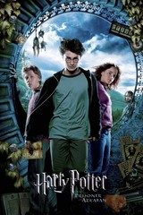

哈利波特－阿茲卡班的逃犯
《哈利波特與阿茲卡班的囚徒》（英語：Harry Potter and the Prisoner of Azkaban）是哈利波特電影系列的第三集，由艾方索·柯朗（Alfonso Cuarón）所執導，2004年上映。除了鄧不利多一角由麥克·詹邦（Michael Gambon）取代已逝的李察·哈里斯（Richard Harris）外，其餘的角色繼續由前兩集的演員擔任。參與本片的人員大部分為上集的原班人馬，其中也包括編劇史蒂芬·克羅夫斯（Steven Kloves）。
劇情概要
神秘的殺人犯天狼星·布萊克從阿茲卡班監獄逃跑了，並且正對霍格華茲魔法與巫術學院虎視眈眈，在那裡由阿茲卡班守衛催狂魔進駐，他們要保護哈利波特以及他的同伴遠離天狼星的威脅。
與原著相異之處
- 在一開始，在小說裡哈利是手電筒照亮書本的，然而在電影裡，哈利是用路模思咒照亮書本。
- 海格送哈利的「怪獸的怪獸書」在小說裡是哈利還在德思禮家時送的，但在電影裡卻是哈利在破斧酒吧時送的。
- 在電影裡，金並沒有遇見魔法部部長。
- 在小說裡，每個人看完哈利騎上鷹馬後，都被分配到一隻鷹馬，但在電影裡，卻是哈利一騎完鷹馬，馬份就開始說話了，其他人只是在一旁觀看。
- 在小說裡，哈利沒有被用到幻形怪(因路平以為會出現佛地魔)，但在電影裡，哈利卻有站在幻形怪前-雖然只有一下下，路平就出面了。
- 在電影裡，當哈利跟妙麗使用時光器回到過去時，妙麗拿石頭丟罐子和她在意她自己的頭髮的情節，在小說裡則完全沒有。